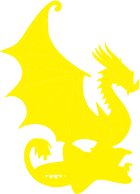

The Constitutional Presidency of Narcoossee is a small micronation in the unincorporated community of Narcoossee. Our total land area is unknown, but we claim* 3 small islands as well as a small bedroom. We currently aren't accepting citizenship for anyone living outside of Central Florida. *We do not own the islands. We just claimed them.

The Presidency of Narcoossee's Flag. Our flag contains purple and gold colors. The gold was designed to vaguely resemble an ant*. *The ant is our national bug and represents that we may be small, but we are strong.
1/25/24-Witchcraft Bill
1/24/24-Flag Bill
1/23/24-None
1/22/24-The day this html file was made!
Our country is a representative democracy. It is split up into two branches. The first branch is the parliament. The parliament is made up of 10 people who draft the bills. Currently, there are only 3 parliament members. The next branch is the president. The president can pass the bills into laws or veto them. Parliament members and the president are elected by the people annually. There is no limit to how long people can serve.
I. Freedom of speech: All citizens have the freedom to express their views about the government for constructive criticism. It is recommended for citizens to attend Parliament meetings when expressing opinions.
II. Freedom from oppression: Citizens can impeach a parliament member or the President so long as he has violated the Constitution.
III. Freedom to bear arms: All citizens that obtain a license can bear weapons at any time. This includes all weapons. Licenses are distributed for 5 U.S. Dollars and a background check will be run. Citizens must be 15 or older.
IV. Innocent until proven Guilty: A suspect is innocent until proven guilty, and the parliament unanimously convicts them.
V. Freedom from interrogation: a suspect can prevent law enforcement from obtaining personal possessions or questions.
VI. Freedom from illegal punishments: the parliament may never assign the convict a cruel or unusual punishment.
Knights of the President: The official army of the Presidency of Narcoossee. Controlled by the president. It consists of two weapons.
President’s Navy: The official Navy of the Presidency of Narcoossee, also controlled by the president. Consists of one-sixth of a paddleboard.
Royal Post Office: Only delivers inside territory. Consists of one Postman. Deliveries are thirty cents a pound.
President’s Treasury: A bank for holding the country’s funds. We have adopted U.S. dollars as our national currency.
There are two parties in the Presidency of Narcoossee as of now. The first party is the socialist party. It is represented by a dragon. The other party is the purple party. The ideals of the purple party is conservatism which is represented by an ibis. Currently, the majority favor the Socialist party. The president is part of the purple party, and three of the parliament members is part of the gold party.
The Socialist party's symbol. It is a dragon landing on a flower.
The Purple party's symbol. It is an American white ibis, a bird native to Narcoossee and also the national bird.
Bills will show up underneath this.
Example_Bill|Drafted_By|Drafted_By_Party|Summary|Status
Flag Bill|Wilned Alvarez|Socialist|All Citizens must display the flag|2 votes against, 2 pending
No Gays Bill|Aiden Langton|Purple|Gay people are jailed and anyone holding the flag has a $1000 fine|INVALIDATED BY PRESIDENT
Legalize Witchcraft|Matthew Colenari-Cuevas|Socialist|Witchcraft is legal|1 vote against, 3 pending
The Presidency of Narcoossee has a few holidays. They are listed below.
Founding Day|January 15| Founding day celebrates the day the PoN was founded. All government employees get the day off.
Christmas|December 25| A celebration of Christmas. All government employees get the week off.
Armed Services Day| October 5| A celebration of the armed services. This day was picked at random.